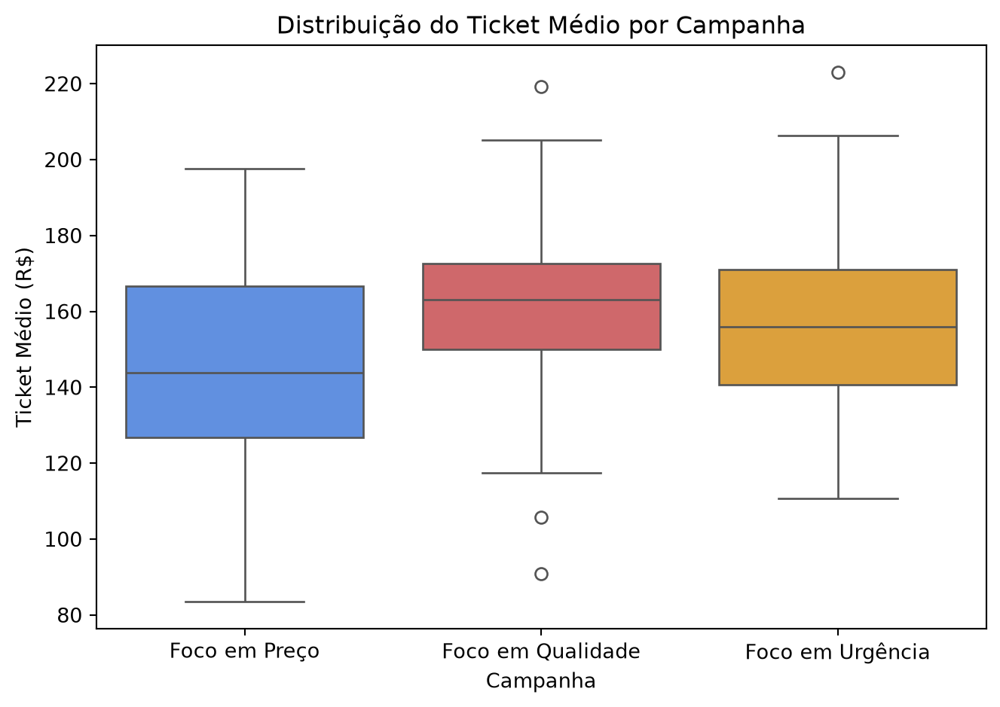

Como Comparar 3 Campanhas de Marketing sem Cair na Armadilha dos Testes t
python
anova
teste a/b/n
alfabetização de dados
data literacy
estatística
Author
Jobenil Júnior
Published
August 8, 2026
Sua equipe de marketing rodou três campanhas diferentes — uma com Foco em Preço, outra com Foco em Qualidade e uma terceira com Foco em Urgência — e agora quer saber: qual delas realmente gerou o maior ticket médio? Antes de sair comparando médias “no olho” ou empilhando vários Testes A/B, vale a pena conhecer a ferramenta estatística feita sob medida para esse tipo de pergunta: a ANOVA.
🎯 Três Campanhas, Uma Pergunta
Imagine que você é analista de dados em uma empresa de e-commerce. O time de marketing testou, ao mesmo tempo, três abordagens de campanha para o mesmo produto, cada uma direcionada a um grupo diferente de clientes. Ao final do mês, você tem em mãos o ticket médio de cada cliente, junto com a campanha que ele recebeu. A pergunta do gestor é direta: “Qual campanha vendeu mais, de verdade — ou essa diferença é só coincidência da amostra?”
É tentador resolver isso comparando as três campanhas duas a duas com um Teste t (Preço vs. Qualidade, Preço vs. Urgência, Qualidade vs. Urgência). O problema é que esse atalho, aparentemente inofensivo, esconde uma armadilha estatística.
⚠️ A Armadilha dos Múltiplos Testes t
Cada Teste t que você roda carrega um risco de erro Tipo I — ou seja, a chance de acusar uma diferença que não existe (um “falso positivo”). Ao usar o nível de significância padrão de 5% (\(\alpha = 0.05\)), você aceita esse risco de 5% por teste.
O problema é que esse risco se acumula a cada novo teste que você faz sobre o mesmo conjunto de dados. Com três campanhas, você precisaria de três comparações duas a duas, e a chance de encontrar pelo menos um resultado “significativo” por puro acaso sobe para perto de 14%, quase três vezes o risco que você pensava estar assumindo.
Rodar vários Testes t sobre o mesmo experimento é como instalar vários alarmes de incêndio que, mesmo sem fogo nenhum, têm 5% de chance cada um de disparar sozinho: quanto mais alarmes você instala, maior a chance de pelo menos um deles “gritar incêndio” por puro acidente — e você sair correndo atrás de um problema que nunca existiu.
Abordagem
Nº de Testes
Erro Tipo I acumulado (aprox.)
Um único Teste t (2 grupos)
1
5%
Três Testes t (3 grupos, par a par)
3
≈ 14%
ANOVA de um fator (3 grupos)
1
5%
A ANOVA (Análise de Variância) resolve esse problema fazendo um único teste global, que responde “existe alguma diferença entre os grupos?” mantendo o erro Tipo I controlado em 5%, não importa quantos grupos você esteja comparando.
📐 A Lógica da ANOVA
Apesar do nome “Análise de Variância”, a ANOVA na verdade compara médias. O truque está em como ela faz essa comparação: ao invés de olhar diretamente para as médias, ela compara dois tipos de variabilidade:
Variância entre os grupos: o quanto as médias das campanhas diferem umas das outras.
Variância dentro dos grupos: o quanto o ticket médio varia entre clientes de uma mesma campanha (o “ruído” natural).
Essas duas variâncias são resumidas em uma única estatística, chamada F:
\[F = \frac{\text{Variância entre os grupos}}{\text{Variância dentro dos grupos}}\]
Se as campanhas realmente têm desempenhos diferentes, a variabilidade entre elas deve ser bem maior do que a variabilidade natural dentro de cada uma — e isso produz um F grande. Se as campanhas são, na prática, equivalentes, o F fica próximo de 1.
Pense assim: é fácil dizer que três turmas de alunos têm desempenhos diferentes se as notas de cada turma são bem parecidas entre si (baixa variância dentro), mas as médias das turmas são bem distintas (alta variância entre). Já se cada turma tiver alunos com notas espalhadíssimas, fica muito mais difícil garantir que a diferença entre as médias não é só ruído.
🧪 Reproduzindo o cenário por simulação
Para deixar tudo reprodutível, vamos simular uma base de 300 clientes (100 por campanha) com três colunas:
Variável
Descrição
ID_Cliente
Identificador único do cliente (inteiro)
Campanha
Categórica: Foco em Preço, Foco em Qualidade ou Foco em Urgência
Ticket_Medio
Contínua: valor gasto pelo cliente, em reais (R$)
Vamos construir os dados de propósito com a Campanha de Preço tendo um ticket médio mais baixo, e Qualidade e Urgência com médias mais próximas entre si — um cenário bem comum no dia a dia de marketing, em que uma campanha claramente perde, mas as outras duas empatam tecnicamente.
🐍 Hoje iremos implementar tudo em Python
Vamos começar simulando os dados e explorando a distribuição do ticket médio com pandas e seaborn.
import numpy as npimport pandas as pd# 1. Definindo a semente para reprodutibilidadenp.random.seed(123)# 2. Parâmetros da simulaçãon_por_campanha =100campanhas = ["Foco em Preço", "Foco em Qualidade", "Foco em Urgência"]medias = {"Foco em Preço": 145, "Foco em Qualidade": 162, "Foco em Urgência": 158}desvio_padrao =22# 3. Gerando o ticket médio de cada cliente, por campanhapartes = []for campanha in campanhas: ticket = np.random.normal(loc=medias[campanha], scale=desvio_padrao, size=n_por_campanha) partes.append(pd.DataFrame({"Campanha": campanha, "Ticket_Medio": ticket}))df = pd.concat(partes, ignore_index=True)df.insert(0, "ID_Cliente", range(1, len(df) +1))df.head()
ID_Cliente
Campanha
Ticket_Medio
0
1
Foco em Preço
121.116127
1
2
Foco em Preço
166.941600
2
3
Foco em Preço
151.225527
3
4
Foco em Preço
111.861516
4
5
Foco em Preço
132.270794
📦 Visualizando as distribuições
import matplotlib.pyplot as pltimport seaborn as snsplt.figure(figsize=(7, 5))sns.boxplot( data=df, x="Campanha", y="Ticket_Medio", hue="Campanha", palette=["#4c8bf5", "#e0575b", "#f5a623"], legend=False)plt.title("Distribuição do Ticket Médio por Campanha")plt.xlabel("Campanha")plt.ylabel("Ticket Médio (R$)")plt.tight_layout()plt.show()

O boxplot nos dá uma pista visual: repare no tamanho das caixas (variância dentro de cada campanha) comparado à diferença de altura entre elas (variância entre as campanhas) — exatamente os dois ingredientes da estatística F.
🔬 Rodando a ANOVA com scipy.stats
from scipy import statsgrupo_preco = df.loc[df["Campanha"] =="Foco em Preço", "Ticket_Medio"]grupo_qualidade = df.loc[df["Campanha"] =="Foco em Qualidade", "Ticket_Medio"]grupo_urgencia = df.loc[df["Campanha"] =="Foco em Urgência", "Ticket_Medio"]estatistica_f, p_valor = stats.f_oneway(grupo_preco, grupo_qualidade, grupo_urgencia)print(f"Estatística F: {estatistica_f:.3f}")print(f"Valor-p: {p_valor:.5f}")
Estatística F: 12.762
Valor-p: 0.00000
Os números que a função f_oneway() do scipy.stats devolve são as estatísticas F e o correspondente valor-p. Como construímos a simulação com médias claramente diferentes entre Preço e as demais campanhas, é esperado que o valor-p apareça bem abaixo de 0.05 — evidência de que pelo menos uma das campanhas se destaca das outras.
A ANOVA responde só uma pergunta: existe alguma diferença entre os grupos? Ela não diz qual campanha é melhor, nem quais pares diferem entre si. Para isso, entram os Teste Post-Hoc, neste caso iremos focar no Teste de Tukey (Tukey’s HSD) — um teste post-hoc que compara todos os pares de grupos, dois a dois, já ajustando o erro Tipo I para o número de comparações feitas (a mesma armadilha que discutimos lá no início, mas agora sob controle).
Empregando pairwise_tukeyhsd da biblioteca statsmodels.stats.multicomp
from statsmodels.stats.multicomp import pairwise_tukeyhsdresultado_tukey = pairwise_tukeyhsd( endog=df["Ticket_Medio"], groups=df["Campanha"], alpha=0.05)print(resultado_tukey)
Multiple Comparison of Means - Tukey HSD, FWER=0.05
===========================================================================
group1 group2 meandiff p-adj lower upper reject
---------------------------------------------------------------------------
Foco em Preço Foco em Qualidade 15.9738 0.0 8.4218 23.5258 True
Foco em Preço Foco em Urgência 10.3107 0.0041 2.7587 17.8627 True
Foco em Qualidade Foco em Urgência -5.6631 0.1828 -13.2151 1.8889 False
---------------------------------------------------------------------------
A saída nos fornece as comparações entre cada par de grupos, suas diferenças médias, os valores de p ajustados, bem como o os limites mínimo e máximo dos intervalos de confiança. Quando o intervalo não cruza o zero (linha pontilhada vertical), a diferença entre aquele par é estatisticamente significativa. Finalmente a coluna reject da tabela do statsmodels entrega a resposta pronta: True quando o par de campanhas apresenta diferença estatisticamente significativa ou False quando não há evidência suficiente para afirmar isso.
💼 Traduzindo o Resultado em Decisão de Negócio
Um output estatístico só tem valor quando vira decisão. Dado o desenho da nossa simulação — Preço com média bem mais baixa, e Qualidade e Urgência com médias próximas —, o padrão esperado nas comparações par a par é:
Com 95% de confiança, tanto a campanha de Qualidade quanto a de Urgência superaram a campanha de Preço, mas não há diferença estatística entre Qualidade e Urgência. Portanto, a recomendação é investir na campanha de Qualidade ou Urgência que tiver o menor custo de execução — investir em ambas simultaneamente não se justificaria pelo ticket médio.
Esse é o valor real da ANOVA seguida do Tukey: ela não só confirma que existe diferença, como aponta exatamente onde ela está — e, tão importante quanto isso, onde ela não existe, evitando que a empresa gaste mais para “escolher” entre duas campanhas estatisticamente empatadas.
🎯 Em resumo:
Etapa
O que fizemos
Por quê
1️⃣
Simulamos 300 clientes distribuídos em 3 campanhas
Para ter um cenário reprodutível de Teste A/B/n
2️⃣
Visualizamos as distribuições com boxplot
Para enxergar a variância dentro e entre os grupos
3️⃣
Rodamos a ANOVA (f_oneway no PythoR)
Para testar, com um único teste, se existe alguma diferença
4️⃣
Aplicamos o Teste de Tukey
Para descobrir quais pares de campanhas realmente diferem
5️⃣
Traduzimos o resultado em recomendação de negócio
Para transformar estatística em decisão
A ANOVA é, na prática, a resposta estatística correta sempre que você tiver três ou mais grupos para comparar de uma só vez — seja campanhas de marketing, variantes de produto, turmas, tratamentos ou regiões de venda. Da próxima vez que alguém sugerir “rodar uns Testes t rapidinho” entre vários grupos, você já sabe por que vale a pena parar e pensar em ANOVA.
Que tal rodar o script você mesmo e alterar a semente (np.random.seed) ou o tamanho da amostra, para ver como o valor-p reage? Envie seus comentários para nosso WhatsApp do que você encontrou. Obrigado pela leitura!
EDA | TESTE T | ENQUETES | ANOVA | MODELOS DE REGRESSÃO | ANÁLISE FATORIAL | MODELAGEM DE EQUAÇÕES ESTRUTURAIS | TRI | RASCH MODELS | MACHINE LEARNING